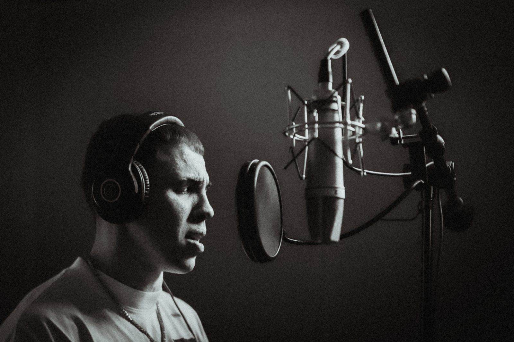
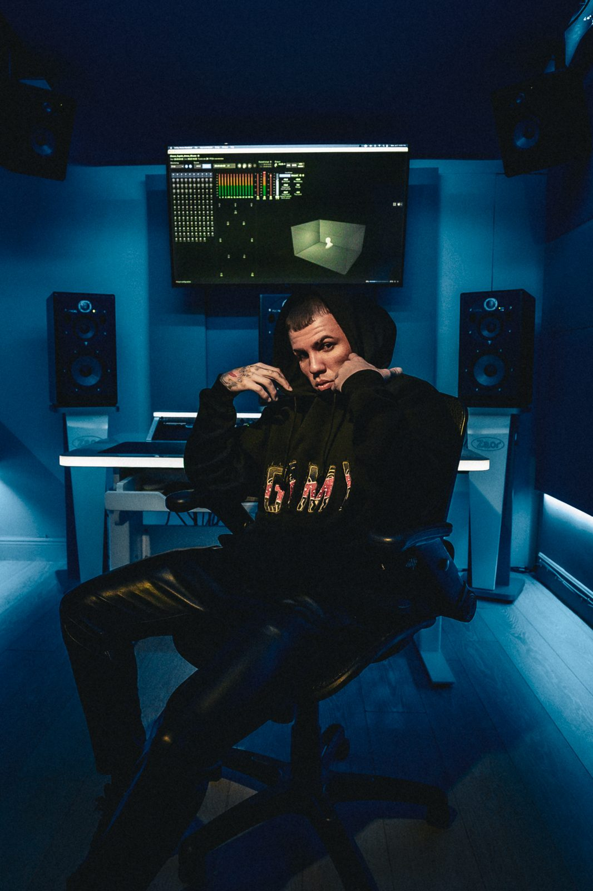
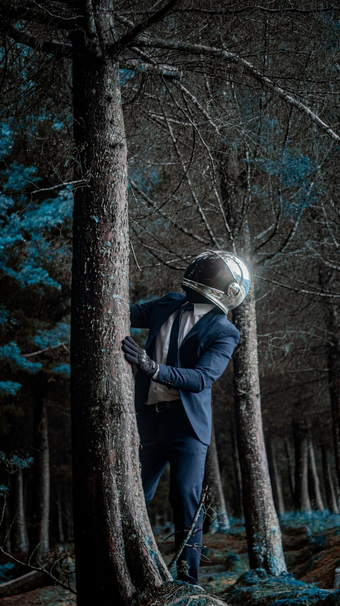
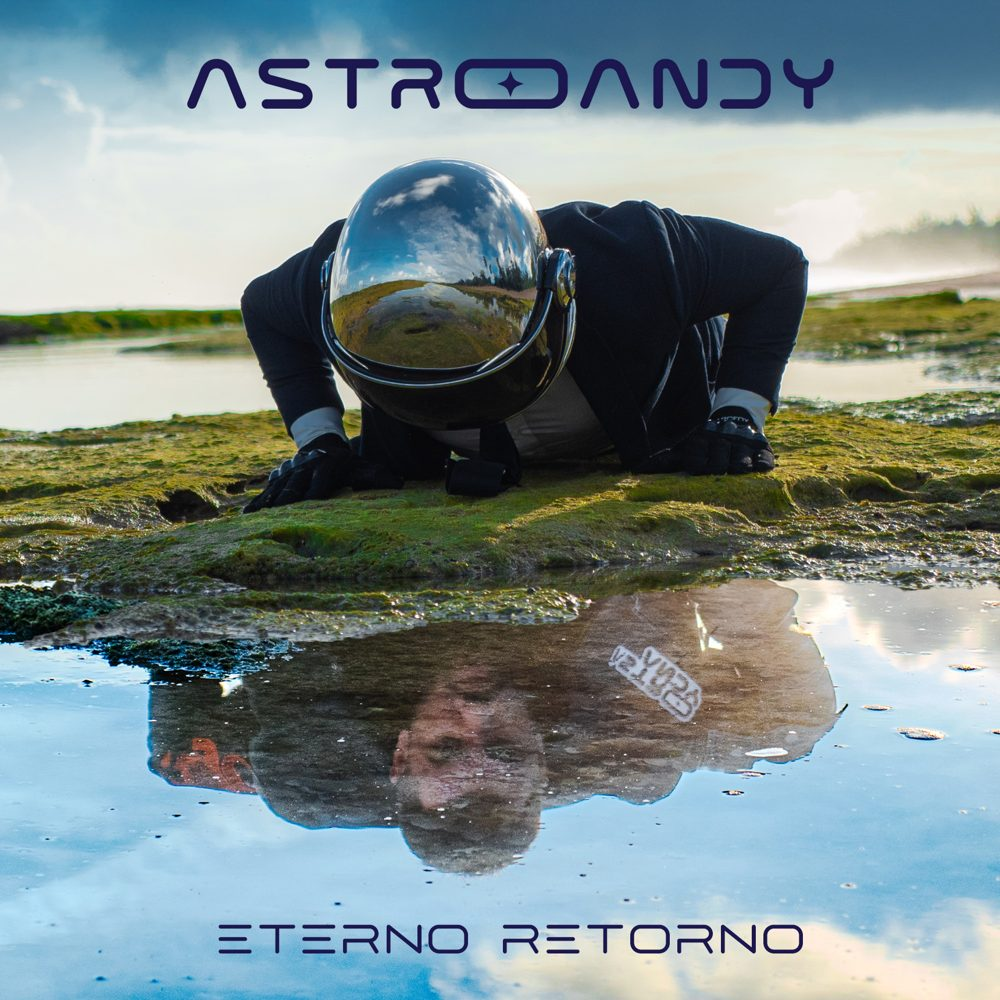

Andrés Felipe Vázquez Santiago, nacido en San Lorenzo, Puerto Rico, es un artista que fusiona visión, disciplina y una estética musical que integra espiritualidad, rap épico y sonidos contemporáneos del reggaetón, pop, R&B y ritmos tropicales como el afro, reggae, dancehall y funk.
Graduado del Bachillerato en Investigación Acción Social (INAS) con concentración en Ciencias Políticas de la Universidad de Puerto Rico, Recinto de Humacao, su propuesta artística se caracteriza por la introspección, la exploración de la dualidad humana y una misión creativa que trasciende lo musical.
25.000personas, Tegucigalpa
15canciones en Eterno Retorno
65.000personas, Santiago de Compostela
4fechas en HÏ Ibiza
La historia
Capítulo uno
Inicios y evolución artística
Su carrera comienza oficialmente el 25 de diciembre de 2020 bajo el nombre artístico Andrey Philip, con el lanzamiento del tema Bobby Joe Hatton. Desde entonces ha demostrado una evolución constante, desarrollando un catálogo multifacético que incluye canciones como No Me Digas Que No ft. AMS, Eros, Lamelo Ball (ROTY), Llama, su secuela 9:55, y Doña Lala ft. EMV & Liziarys.
Este último sencillo marcó su debut radial en Puerto Rico, sonando en emisoras emblemáticas como Reggaetón 94 (94.7 FM) y Mix 107.7, consolidando sus primeros pasos dentro del circuito musical del país.

Tributo a Tego
Herencia: primer proyecto conceptual
El 26 de octubre de 2021, presenta su primer proyecto conceptual titulado Herencia, un EP tributo a Tego Calderón compuesto por Los Mate Freestyle, La Flakka y Mazukamba.
El proyecto acumuló 143,446 streams en Spotify y superó las 366,000 vistas en YouTube, fortaleciendo su presencia en plataformas digitales y posicionándolo dentro de la nueva generación de artistas emergentes.
Ese mismo año, el 7 de noviembre de 2021, Astro Andy tuvo una de sus primeras presentaciones de gran escala al subir al escenario frente a más de 10,000 personas en el Coliseo Manuel G. “Petaca” Iguina en Arecibo durante la final del Baloncesto Superior Nacional, compartiendo escenario con figuras como Anuel AA, Frabian Eli y Anonimous.
La gira
2022: expansión internacional
El 2022 marcó un punto de inflexión en su carrera. Tras lanzar el freestyle Marshalls 0629 – inspirado en su decisión de renunciar a su empleo para dedicarse por completo a la música – y el sencillo Flores Pa’ Los Muertos, recibió la invitación para ser opening act del concierto de Anuel AA en Tegucigalpa, Honduras, ante 25,000 personas.
A partir de ese momento se integró a parte de la gira internacional del artista, presentándose en importantes escenarios de Latinoamérica y Europa, incluyendo:
Movistar ArenaBuenos Aires, Argentina – 19 mayo 2022
Arena PerúLima, Perú – 21 mayo 2022
AntofagastaChile – 24 mayo 2022
Arena Viña del MarChile – 28 mayo 2022
Movistar ArenaSantiago, Chile – 31 mayo 2022
Antes de viajar a Europa lanzó el sencillo Pide Un Deseo, seguido de su debut en HÏ Ibiza, donde tuvo una residencia de cuatro fechas.
Durante esta etapa también se presentó en importantes ciudades como:
Santiago de Compostela 65.000
Madrid 45.000+
Zurich
Milán
Roma
Barcelona
Ibiza
Valencia
Cádiz
Marbella
Palma de Mallorca
Benidorm
Oropesa del Mar
Asturias

Nueva identidad
El renacer: Astro Andy
Tras esta gira internacional, el artista entró en una nueva etapa creativa marcada por un cambio de identidad artística. Mientras Andrey Philip representa sus inicios musicales, Astro Andy surge como la evolución de su visión artística.
Esta nueva etapa comenzó con los lanzamientos de:
Una Vez Más oct 2023
Pretexto dic 2023
Tu Cuerpo ene 2024
Tamo En Alta ft. Ochaan abr 2024
Aventura ago 2024
Diciembre En Medellín dic 2024


El álbum
Eterno Retorno
El 20 de febrero de 2025, Astro Andy lanzó su primer álbum de estudio Eterno Retorno, un proyecto de 15 canciones que incluye temas como Andrey Philip & Astro Andy, Color, Escondidos, Reloj, Love <3, Bb, Modo Diablo (MD), Fin Del Mundo y el tema homónimo Eterno Retorno.
El álbum ha acumulado casi 3 millones de streams en Spotify (2,992,642). Entre sus temas más destacados se encuentra Tu Cuerpo, que supera 1,072,186 streams en la plataforma, mientras que Pretexto alcanzó más de 1.2 millones de vistas en YouTube.
Bogotá en el mapa
Nuevos hitos
El 3 de mayo de 2025, Astro Andy marcó otro momento importante en su carrera al formar parte del opening act del concierto de Maluma – Bogotá En El Mapa – en el Estadio Nemesio Camacho El Campín en Bogotá, como parte de la gira +Pretty +Dirty, presentándose frente a más de 45,000 personas.
Lo que viene
Presente y futuro
Actualmente, Astro Andy se encuentra trabajando en nueva música y desarrollando la visión de lo que será 2026, proyectado como uno de los capítulos más expansivos y trascendentales de su carrera artística.
Con una propuesta auténtica, una narrativa espiritual y una identidad musical clara, Astro Andy continúa posicionándose como uno de los talentos emergentes más prometedores del movimiento latino.